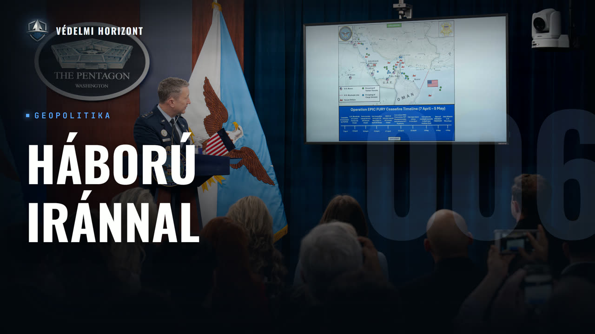

Az USA Irán elleni háborúja - eszakláció, stratégia - elemzés Csizmazia Gábor Amerika-szakértővel

Leírás
Résztvevők: Zsebeházy Bálint, Pásztor Ákos, Csizmazia Gábor
Üdvözöljük a Védelmi Horizont kutatóműhely hatodik adásában!
Ebben az epizódban vendégünk Csizmazia Gábor, az Egyesült Államokra szakosodott elemző, akivel az Egyesült Államok és Irán közötti háború köré szervezzük a beszélgetést. Abból indulunk ki, hogyan jutottunk el a tavalyi, behatárolt és a nukleáris programra összpontosító, gyors tűzszünettel záruló tizenkét napos háborútól a mostani, jóval szélesebb eszkalációig – és hol változott meg a logika, ahogy az amerikai célok a nukleáris program felszámolásától a rendszer megdöntése felé tágultak. A húti (Houti) párhuzamon keresztül azt vizsgáljuk, hogy önmagában a légierő képes-e megdönteni egy rendszert, milyen szerepet játszik a költség és a szárazföldi hadművelet elkerülése, majd az amerikai szemszögből mérlegeljük a stratégiai következményeket: siker vagy csapda a vezetés megfejezésére épülő stratégia, és hogyan hat a közel-keleti erőlekötés a Kínával és Oroszországgal szembeni elrettentésre. Kitérünk a belpolitikai vetületre – a kongresszusi felhatalmazás nélkül indított háborúra, a megosztott közvéleményre, a Republikánus Párton belüli törésvonalakra, a Vance–Rubio ellentétre és a 2028-as kilátásokra –, végül pedig a Pentagon Pete Hegseth vezetése alatti átalakulására, majd azzal zárunk, mire érdemes figyelni a következő hónapokban.
Leirat beszélőnként
Üdv mindenkinek! Ez itt a Védelmi Horizont, az a podcast, ahol gazdasági, hadiipari és biztonságpolitikai szempontok alapján nézünk rá ugyanarra a témára egyszerre egy asztalnál. A nevem Zsebeházi Bálint, és most hárman ülünk a mikrofonok mögött. Mellettem Pásztor Ákos, velem szemben pedig Csizmazia Gábor, a Nemzetközi Közszolgálati Egyetem John Lukács Intézetének oktatója és tudományos munkatársa. Az Egyesült Államok kül- és biztonságpolitikai kutatója. Köszönjük, hogy elfogadta a meghívásunkat.
Én köszönöm a lehetőséget és köszöntöm a hallgatókat.
Akkor rá is térnénk a kérdésekre. Igazából az első blokkunkban arról beszélnénk, hogy hogyan eszkarálódott ide a helyzet a 12 napos háború óta. Tulajdonképpen hogyan jutott el az Egyesült Államok a tavalyi behatárolt nukleáris programra összpontosító, gyors túlszünettel záruló háborútól a mostani elhúzódó konfliktusig?
Ugye ez az egésznek talán az egyik legfontosabb eleme, hogy ugye a hivatalos mondás az amerikai kormányzat részéről, majd a Trump adminisztráció részéről az volt, és ugye ez már évek óta, tehát már az első Trump ciklus alatt is ismeretes volt, hogy az iráni atomprogram tekintetében ugye Washington egyáltalán nem bízik meg Teheránban. Tehát úgy gondolja, hogy az Barack Obama által 2015-ben tető alá hozott, ugye ez GCPOA, tehát ez a Tulajdonképpen az iráni atoma kurviden, ami nem egy két oldalú, hanem egy több oldalú megállapodás volt, hogy az összességében egy rossz megállapodás, merthogy noha stabilizálja a politikai viszonyt, illetve hát az egész kérdést egy kezelhető mederbe szorítja, de összességében a főleg republikánus hátterű kritikusok szerint tulajdonképpen csak időkérdése volt innentől kezdve, hogy az irániak mikor fognak Megállapodás keretei között is akár atomfegyvert kifejleszteni. És tehát mindig volt egy ilyen szkepszis. Ugye ez vezetett arra, hogy 2018-ban Trump ugye felrúgta egy oldalon ezt az egész megállapodást, ami hát sokak számára borzolta a kedélyeket, de igazából borítékolható volt, hogy ezt előbb-utóbb megteszi. Ezt azért mondom, merthogy az egésznek a központi eleme, tehát az amerikai, a Trumpi külpolitikának a fő tétele az az, hogy Iránnak ne legyen atomfegyvere. Ezt azért mondom, azért hangsúlyozom, merthogy mindenféle egyéb szempont előjött, hogy itt rezsimet akarnak váltani az amerikaiak, hogy esetleg Izraelnek az utasítására, iránymutatására, vagy hát Késztetésére cselekszenek, úgy, ahogy cselekszenek. Ugye ezeket igazság szerint az elmúlt, csak az elmúlt mondjuk három-négy hét egyébként többeket megcáfolt. Hivatalosan például a rezsimváltás soha nem volt az amerikai kormányzatnak a célja, mármint a Trump adminisztrációnak. Korábban persze voltak erre utaló jelek, tehát vissza lehetne menni legalább a Clinton adminisztrációig, ha csak a hidegháború utáni éveket nézem, hogy konkrétan költségvetési tétel volt, hogy olyan Kezdeményezések voltak a külügyminisztériumban, hogy konkrétan megdönteni, vagy legalábbis rezsimet váltani Iránban. De a Trump adminisztrációnak ez nem volt a célja. A Trump adminisztrációnak a célja alapvetően elsősorban az volt, hogy az iráni nukleáris Fegyverprogramot azt kiiktassa. Erről szólt tulajdonképpen tavaly a Béketes Bombázóknak ez az akciója. A másik célja pedig az volt, és ezt már kevésbé artikulálta, de időnként azért főleg Marco Rubio egyébként ezt kijelentette, hogy az iráni erőkivetítési képességeket kell, egyébként konvencionális erőkivetítési képességeket kell még szintén visszavágni. Mert az érvelés az úgy szólt, hogy függetlenül attól, hogy a tavalyi bombázás most sikeresnek tekinthető vagy sem, és ezért mondtam el az egésznek a Mondjam a gyökere, ha úgy tetszik, mert a kritika úgy szólt, hogy ha sikeres volt a tavalyi bombázás, akkor milyen fenének kellett idén háborúzni. Ugye az érvelés az úgy szólt, hogy igen, sikeresnek tekinthető a tavalyi bombázás, de időközben, és nem az elmúlt egy évben, hanem az elmúlt években olyan konvencionális erőkivetítési és persze védelmi képességeket építettek fel az irániak, hogy tulajdonképpen Újra tudták volna építeni, nem tudom hány év lefolgása alatt ismét az atomfegyver programjukat, amikhez viszont ilyen konvencionális védőfalon keresztül az amerikaiak később már nem fértek hozzá. Tehát magyarul az volt az amerikai érvelés, Az izraelivel együtt egyébként, hogy most van egy lehetőség arra, hogy viszonylag hatékonyan, de az iráni konvencionális erőket, itt a haditengerészeteket gondolni, légvédelemre, légi erőre, hogy ezeket konkrétan letörjük, amivel egyrészt elérjük azt, hogy könnyebben hozzáférhetünk majd a nukleáris képességekhez. Az áruljából adónai kövekezőkérdéseket akkor embereket kellene küldeni Iránba, tehát szárazföldi erőket, ez ugye nem történt meg. De a másik, hogy egyúttal, hogyha ezeket a képességeit letörjük Iránnak, akkor egyúttal Irán majd a különböző öbölmenti országokat meg nem fogja tudni támadni. És ugye hát az elmúlt egy-két hónap tapasztalata azt mutatta, hogy hát sokkal több képességekkel rendelkeznek az irániak, mint amit ezt feltételeztek az amerikaiak, vagy legalábbis a kővilág igazság szerint ezt nem tudjuk. Tehát itt dobáloznak a számokkal, hogy hány százalékát a rakétáknak ellőtték, de nem tudjuk, mi a bázis. Tehát, hogy minek a tudom, 80 százalékát vagy akár hány százalékát lőtték el az irániak, illetve hogy milyen a drón építési képességük, majd a kapacitásra gondolok elsősorban. És ugye azért furcsa ez az egész háború, és itt nagyon sokat lehet beszélni, csak itt azért elemez ki, hogy azért nehéz ezt értékelni, mert a maga a háború is furcsa volt. Tehát például, ha ezt múlt időben lehet persze róla beszélni, mert ugye az első egy hónapban zajlott az amerikai műveletetnek a nagy része. Tehát igazság szerint itt ugye március elején, ha jól emlékszem március elején, elsején, vagy amikor márciusban kezdődött ugye ez az egész, április talán 8-a után már komolyabb amerikai műveletek nem nagyon voltak. Adókapok volt Iráni, meg főleg amerikai, meg izraeli részről. De az intenzív amerikai légicsapásoknak, műveleteknek a nagy része, az igazából három-négy hét alatt lezajlott. Ez az egyik furcsaság. A másik az az, hogy bármennyire is hangos volt a sajtó az olyan hírekről, mint például, hogy a lányiskolát eltalálták az amerikaiak. A dologhoz hozzátartozik, hogy Ettől a tényleg egyiket nem is szándékolt csapástól eltekintve tulajdonképpen az amerikaiak visszafogták magukat, mert zömében katonai célpontokat támadtak. Tehát például kettős felhasználású infrastruktúrát, hidakat, különböző közutakat, csomópontokat, illetve Lehetne még említeni mondjuk erőműveket, amiket Trump megfenyegette, hogy majd, ugye ez a civilizáció eltörlése üzenetrészben erről szól, tehát megfenyegette, hogy ezeket bombázza, de igazából ezekre nem került sor. Ez nagy szó, mert az amerikaiak azért nem úgy szokták bombázni, hogy ennyire visszafogják magukat. Tehát ezt csak azért mondom, hogy ez az ütőkártya még ott van az amerikai kezekben, de egész eddig igazából ezekre nem került sor. És ugye a harmadik furcsaság, ami a háborúban volt és ami miatt nehéz értékelni, hogy azonnal megjelent a sajtóban ez a, főleg az amerikai sajtóban ez az örökké tartó, Forever Wars, örökké tartó háború, főleg a közel-keleti élmények miatt, mármint a 2000-es évekbeli közel-keleti élmények vagy tapasztalatok miatt. De még egyszer mondom, hát csak légi erővel hívták meg rakétákkal ezt a háborút, szálaszföldi erők nem vettek részt benne, haditengerészet még az részt vett benne, Meg hát mondom, alapvetően ez technikailag két hónap, hogyha tényleg nagyvonalú vagyok, de egyébként a műveletek jelentős része az inkább egy hónap, másfél, amiatt lezajlott, meg ugye folyamatosan kész ellében voltak az amerikai erők, hogy arra az esetre, hogy mondjuk Irán latvaszítást követne el ugye a megállapodást követően. Ezt csak azért mondom, mert hogy összességében ilyen tekintetben is visszafogottnak tekinthető maga a konfliktus. De politikai síkon, és itt az irániak nagyon jól kijátszották ezt a kártyát, egyszerűen a társadalom Nemcsak az amerikai, általában a nyugati világtársadalma sokkal hosszabbnak tartotta ezt az egész konfliktust, mint amilyen a valóságban volt. Ezért volt az, hogy amikor Trump egyszer megszólalt az ügyben, még azt hiszem talán március vége felé, akkor egész konkrétan ugye Elkezdte így, mint valami diák felsorolni, hogy hát az afganisztáni műveletek mennyi ideig tartottak, Irakban meddig tartottak a műveletek, Vietnámban, stb. Tehát, hogy alapvetően így órára pontosan vagy napra pontosan ezeket felsorolta, pont hogy jelezze, hogy ahhoz képest ez jóval rövidebb. Csak hát ugye a figyelmi küszöb a nyugati társadalomban ennél jóval Szűk ebben ilyen értelemben, úgyhogy ezért is nehéz ezt megítélni, hogy most akkor miért mondhatjuk azt, hogy ez elhúzódott és hogy ennyire eszkalálódott. Én nem hiszem, hogy akkora eszkalációról beszélünk egyébként. És most pillanatnyilag, csak záró gondolat, most ott vagyunk, és akkor ez a válasz igazából a kérdésre, hogy Van elméletileg egy szándéknyilatkozat, ami igazából csak egy politikai dokumentum, tehát semmi jogilag kikényszeríthető eleme nincs. Ez eléggé vegyes megítélés alá esett, főleg az Egyesült Államokban is, főleg a Trump támogatói részéről, de Pillanatnyilag ott vagyunk, hogy mind a két fél azt mondja, hogy megszekte a megállapodást, és hogy lényegében egy ilyen adok-kapok kezdődött el újra, nagyjából ugyanaz, mint ami a háború intenzív 3-4 hetes szakasza után következett, hogy az irániak meglőnek egy hajót vagy kettőt, az amerikaiak erre aránytalanul választ csapást mérnek, Arra viszont ügyelnek, hogy még egyszer olyan intenzitású ne legyen a háború, mint az első három-négy hétben, mert annak már súlyosabb politikai és gazdasági következményei is lehetnek oda át a tengeren túl, mint Amerikában.
Egyébként nekem most az jutott eszembe, hogy tulajdonképpen, ha jól vettem ki a szavaidból, tényleg ilyen köccurkálás kicsit ez a konfliktusnak az elemzése, miután igazából baromi kevés információt tudunk, nagyon sok a dezinformáció, és kicsit ilyen struktúrálisabb dolgok felé terelném ezért a témát most már, hogy Itt nekem, amikor még annó néztem ezt a konfliktust, nekem azonnal a huszi párhuzam jutott eszembe, hogy tulajdonképpen miért hasonlít Vagy hát számomra azért hasonlított, mert ugyanúgy egy csókpontot, tehát egy folytópontról szólt az a konfliktus is, ugyanúgy egy asszimetrikus hadviselésről szólt, hogy tulajdonképpen ugye ott is sok elemző azt mondta, hogy van egy taktikai siker, Amit most Iránál is el tudunk mondani, hogy katonailag gyakorlatilag lenullázta Iránt, de egy stratégiai kudarc, mivel a végcielt azt nem sikerült elérni. És tulajdonképpen miért nem tudott tanulni a Pentagon, az amerikai vezetése a Husis esetből, és ezt miért nem tudta itt implementálni?
Van egy olyan olvasata ennek, azt hiszem, O'Brien a Donald Trumpnak az első ciklusából az utolsó nemzeti biztonsági tanácsadója vagy főtanácsadója írt egy véleménycikket erről még korábban, hogy alapvetően Ez, amit Amerika csinált a közel-keleten, akár Iránnal szemben, akár az említett Huszikkal vagy Hutikkal, ki hogyan ejti szemben, az tulajdonképpen az ilyen büntető hadjárat, ami az amerikai külpolitikában azért rendelkezik komolyabb hagyományokkal, visszamennve már a Jefferson elnökségig egyébként, tehát a 18. század végéig. Alapvetően itt azról szól a történet, hogy az amerikai geopolitika Formálisan egyébként már közel száz éve, de egyébként informálisan már a kezdetektől fogva mindig érzékeny volt ugyan, hogy említettél a folytópontokra, meg a nemzetközi kereskedelmi utvonalatnak a védelmére. Ezért volt az, hogy újabb fázisba lépett az irányi háború is, amikor bejelentette Teherán, hogy na, akkor lezárja a hormózi szorost. És az amerikaiak miközben alattesebben neki közvetlen érdekeltségük feltétlenül nincs ezekben az útvonalakban, csak közvetett, ezért úgy visszanyúlnak ehhez az egész ügyhöz, hogy a tengerei útvonalaknak az ellenőrzéséhez, hogy ezt tulajdonképpen rajtuk kívül senki nem tudja megcsinálni, és véletlenül nem is akarja, meg tényleg nem lenne rá képes. Ezért jobb hián ez az egy hegemon szerep, amit az Egyesült Államok most Ettől a hegemon szereptől távolodó összességében azért még folytat. Tehát ilyen értelemben nem az a cél, hogy ott egy állandó amerikai jelenléttel garantáljuk az útvonalak biztonságát, hanem a cél az az, hogy ha és amennyiben adhocitás történik, akkor aránytalan válaszcsapást fogunk mérni, És ennek érdekében hát bízunk benne, hogy ez elrettentő lesz hosszabb távon, de tartós jelenleg, tehát igazából a közel-keleten az amerikaiak nem akarnak. Az, hogy ez stratégiai a kudarc volt, amit Iránban, vagy Irán kapcsán folytattak az amerikaiak, szerintem akkor minősített, hogy ez stratégiai a kudarcnak, és elképzelhető, hogy erről van szó, csak akkor lehet szerintem ezt biztosan kijelenteni, hogyha tényleg annyira megcsappanta az amerikai Hát a hadianyag, illetve a rakétakészlet. Mint amennyire ezt mondták. Ugye lehetett ilyen híreket hallani, hogy a lengyelek sem kapták meg a Patriot rendszereket egyszerűen azért, mert hogy újra kellett priorizálni az amerikaiaknak itt a nemzetközi szállításokat, meg a saját készleteiknek az újratöltését, vagy feltöltését, hogyha ez tényleg ilyen mértékben megcsappant, és majd meglátjuk, hogy a rekordmagasságú 1,5 billió vagy 1500 milliárd dollár értékű vagy méretű védelmi költségvetésben Újjá tudja építeni az amerikai védelmi-ipari bázis az Egyesült Állam, amit ugye egyhamar nem fogunk kideríteni, tehát az idő kell, de hogyha valóban ez így megcsapad, akkor igen, akkor ez stratégiai kudarc, merthogy elhasználta olyan eszközöket, vagy rendszereket, amiket máshol lett volna célszerű, vagy másolat esetben majd égetően hiányozni fognak. Azt, hogy most Iránt Térdekényszerítették vagy nem, tehát ha ebben mérjük, a huszikhoz hasonlóan, hogy még ott vannak és továbbra is tudnak fejlesztődést okozni a nemzetközi kereskedelmi útvonalaknak. Ebben mérve szerintem stratégiai kudarcról még nem nagyon lehet beszélni, mert alapvetően az amerikaiak nem számolnak azzal, hogy akkor 100%-ban kiiktatják ezeket a szerveket. Ahhoz ott kellene lenni. De igazság szerint az amerikai céltől az egész iráni háborútól függetlenül, hogy a közel-keletet amennyire lehet, azért próbáljuk távolról elkerülni. Pont ez volt érdekes egyébként az iráni háború kapcsán, hogy amikor ez kitört, akkor utána valami három napon belül volt esedék esettől függetlenül, ugye Elbridge Colby védelempolitikai helyettes államtitkárnak a meghallgatása, A szenátus, a kongresszusban. És ott pont ezt kérdezték, hogy eledvetileg a meghallgatás az arról szólt volna, hogy a nemzeti védelmi stratégiában mik vannak a hivatalos dokumentumban, de hát közben ugye az események kicsikét más irányba vittek minket, és a kettőt azt köti össze, hogy a dokumentum konkrétan úgy fogalmaz a közel-Kelet-tel kapcsolatban, hogy nem emeli ki iránt, hogy akkor ezen mindenképp kezdeni kell valamit, mint égető problémával, Általában a stratégiai előkészület az arra vonatkozott, hogy a közel-keletet pont úgy, mint más térségeket is, a távol-keletet leszámítva átengedjük a regionális partneretnek meg szövetségeseknek. Ugye ez, ami most már Burden Shifting-nek neveznek, tehát nem Burden Sharing, hogy teher megosztás, hanem konkrétan áttoljuk a tehernek Egy jelentős részét annak a szövetségesnek, aki abban a régióban van jelen. Úgyhogy ezért mondom, hogy ilyen szempontból szerintem stratégiai kudarcról talán még korai beszélni. Ha tényleg az erőkészletek megcsapantak, és ez ugye egy másik konfliktus fog erre rávilágítani, akkor tényleg inkább beszélhetünk Mallor-ről. Még egy utolsó gondolat csak ehhez az összkép miatt. Létezik egy olyan olvashata is ennek az egésznek, majd ennek az iráni háborúnak, hogy alapvetően az Egyesült Államoknak már nem érdeke mindenhol rendet meg stabilitást fenntartani, bizonyos helyzetekben meg területeken majdnem, hogy az instabilitás, bármilyen furcsán hangzik, szolgálja inkább az érdekét. Tehát például az, hogy megszakadnak az olajszállítmányok Iránból, az Amerikának kevésbé fáj. Nyilván fáj érzéke az üzemanyag árakban, de kevésbé fáj, mint mondjuk az európaiaknak, vagy éppen távol-keleti országoknak. Ugye Kína kapcsán itt vegyes értékelések vannak, mert egyrésztről egyesek azt mondják, hogy meg se kottjan neki, másrésztről meg csak az olajszállítmányának a 40%-a az csak Iránból jön. Tehát nekem senki nem mondja, hogy ezt nem érzik meg. Tehát, hogy ilyen szempontból van egy ilyen olvasat, hogy az Egyesült Államok Trumptól teljesen függetlenül évek óta, egész korábban 2017-től már nyilvánvalóan, de előtte is, igazából ugye ilyen regionális kihívókkal számol, Kínai Népköztársaság, Oroszországi Föderáció, Iráni Isztán Köztársaság, illetve Észak-Korea. És hogy ezek a hatalmak többé-kevésbé koordinálják a fellépésüket. Lázs részakoraiak mondjuk Ukrajnában, például vagy szintén irániak, szintén Ukrajnában ugye itt az oroszoknak a támogatásával és vice versa. És hogy tulajdonképpen előbb-utóbb elképzelhető, hogy lesz egy többfrontos háború itt az Amerika és a Nyugat, illetve azon a kihívói között, és az amerikaiak azt mondják, hogy akkor próbáljunk meg ugye ezt mondják a sequencing, tehát próbáljuk meg úgy ütemezni ezt az egészet, Hogy a létező leggyengébb, vagy legjobban kezelhető ellenfelet fogjuk majd előrevenni, és az ő képességeit amennyire csak lehet megvágni. És ugye ezért mondtam azt, meg először beszéltük azt, hogy a konvencionális képességek terén ugye Iránt idézőjebben lenullázták, vagy legalábbis jelentős mértében csökkentették az erőkivetítési és védelmi képességeiket. Tehát, hogy előre terveztek ilyen szempontból az amerikaiak.
Nagyon szépen köszönjük a kifejtést. Nekem pedig itt, amit föl is meg is említettél már egy ilyen gondolatok keretéig, az jutott eszembe egyébként, hogy szintén milyen hatással lehet Irán úgymond szövetségeseire Ez a háború és mit jelent mindez az amerikai haderőnek a globális tervezéséhez szempontjából? Hogy adhat a közel-keleten és az indol csendes-óceáni és az Oroszország európai eredetlentése szempontjából ez az iráni háború, ahogy te nevezted, esetleges malörje a későbbiekben?
Hát az amerikai részről tudok mondani, tehát az, hogy a kínaiakra meg az oroszokra hogyan hatol, tehát amerikai olvasatokról tudok ezügyben, hogy az amerikaiak úgy látják, hogy az egész ügy arra világított rá, hogy igazából az oroszoknak például, de a kínaiaknak is a mozgáster erősen korlátozott a közel-keretben. Az oroszoknak azért, mert hogy nekik volt befolyású például Szíriában, de lehetne Iránt is említeni, és hogy most nem érződött az, hogy annyira az akaratukat tudták volna érvényesíteni, Ez az amerikai olvasat. Kína kapcsán pedig, hogy vagy nem akarta, vagy nem tudta segíteni annyira látványosan Teheránt, Peking. Megint ez az amerikai olvasat. Ez vitatható, én nem látok bele a kínai meg az orosz külpolitikai logikába, az amerikai megértés ezekről inkább ez. Ami pedig az amerikai tervezést illeti, ugye nem véletlen, hogy Véletlen egybeesés ilyen szempontból, de ugye most volt Ankarában a NATO csúcs, és ugye annak az egyik kiemelteleme az pont erről a burden shifting, tehát hogy a teher áttolásáról szólt, ami diohéjban azt jelenti, hogy Európa vonatkozásában, de ez igaz más területekre is, csak hát NATO-révén ugye Európáról van szó jobban, Hogy a konvencionális védelmi képességek terén az európaiak, vagy hát Amerika szövetségesei azok legyenek minél nagyobb mértében önállóak, vagy legalábbis önállátóak. És igazából az ilyen magasabb technológiai háttérrel rendelkező Ilyen szolgáltatások, illetve kiegészítések azok, amiket az Egyesült Államok nyújt. Gondolok itt a nukleáris védőernyőre, hírszerzésre, a különböző műholdas támogatásokra, vezetés-irányítási rendszerekre. Tehát, hogy ilyen értelemben továbbra is rajta tartja a kezét a régión az Egyesült Államok, de a konvencionális erők terén egyre inkább áttolja az európaiakra, ami nemcsak azt jelenti, hogy költsenek többet védelemre, mert ez egy dolog, Hanem azt is jelenti, hogy például ne csak arról lesz olyan a dolog, hogy akkor többet költenek védelemre és több anyagot is vásárolnak meg eszközöket, hanem hogy ők is gyártsanak, illetve infrastruktúrába is fordítsanak erőforrásokat. Ez már a legutóbbi NATO csúcson is megjelent egyébként Hágában. De most itt Ankarában is ilyen szempontból ebbe az irányba mozdultak el többen is, egyébként például a lengyelek, de mások is észtek szintén, tehát hogy itt a nemzeközi együttműködések terén. És ilyen szempontból az iráni háborúnak is ez a Amerikai szempontból a tanulsága, hogy igazából minden térségben olyan mértékben tudjuk kifejteni majd az akaratunkat a szövetségi rendszerekkel együtt, amilyen képességekkel rendelkeznek a szövetségesek. Ezért miért adták az amerikaiak például Izraelt, hogy a csapások egy részét az tulajdonképpen egymaga végzi, és hogy alapvetően az Egyesült Államok csak kiegészíti ezeket, vagy legalábbis támogatja. De hogy nem kell feltétlenül olyan mértékben akár megfinanszírozni, akár logisztikai vagy bármilyen más szempontból támogatnia, mint mondjuk, gondolok vissza mondjuk 2014 és 2022 körül ugye az európai vonalon ugye Ukrajna esetében. az európai szövetségeseket, illetve a NATO keleti szárnyán lévő tevékenységeket. Ugye ezért mondom, hogy amerikai szempontból talán ez a tanulság, ami nagy kérdőjel itt, és csak ez egy rövid gondolat, hogy a szövetségesek, tehát a helybéli szövetségesek mit vonnak le ebből? Gondolok itt az öbölmenti országokra. Én nem látom bele az ő döntéshozatalukba, de ugye a sajtóban megjelent Több olyan elemzés is, meg véleménycikk is, meg persze a közbeszéd is ebbe az irányba ment, hogy hát állítólag ezek az öbölmenti országok, ezek tulajdonképpen hát rosszá ízzel jöttek el tőle az egésztől, mert hogy azáltal, hogy amerikai támaszpontoknak adnak otthont, azáltal ők rákerültek ugye Irán céltáblájára, és hogy igazából Amerika nem tudtak előképpen megvédeni őket. Én ezzel azért nem tudok mit kezdeni, mert egyrészt mondom, nem látok be ezeknek az országoknak a döntéshozatai meg stratégiai kultúrájába. Egyrészt másrészt meg feltételezném, hogy amikor már az elején amerikai bázist fogadtak be, akkor számoltak azzal lehetőséggel, hogy ez majd célpont lesz. És általában Amerikának a Európából kiindulva a szövetségesei ezt, ha úgy tetszik, belekalkulálják az egészbe. Tehát a lengyeleket lehetnék példaképp mondani, hogy a lengyeleknél nem került fel ellenérvként az, hogy mondjuk rakétavédelmi rendszert telepítenek Regikovóba már a Hét 2009 magasságában, hogy hát ez orosz célpont. Ezt pedig az oroszok teljesen nyíltan beszéltek erről, hogy ha és amennyiben odáig megy a dolog, akkor ez akár preemptív csapásnak a célpontja is lehet. Rengyileg vállalatvántottak, mert ők pont azért akarnak oda amerikai támaszpontot, merthogy orosz célpontnak tekintik magukat. Tehát azért mondom, hogy itt ezt nehéz megítélni szerintem, hogy most ez mennyire áldás és mennyire átokasz, hogy amerikai katonai bázis van az országnak a területén.
Egyébként szerintem ami különösen érdekes, az nem is a nagyhatalmakkal kapcsolatos elrettentés, mint Oroszország vagy Kína, vagy arról nagyon sokat beszélünk, hanem sokkal inkább az, hogy ez az átalakuló világrendben a középhatalmaknak megnő a szerepük olyan szempontból, hogy a technológia már lehetőséget ad számukra is, Hogy gyakorlatilag mint Irán megbénítson egy folytópontot úgy, hogy igazából csak ilyen tízezer dolláros drónokkal hajgálja a hajókat. És ilyen szempontból nemrég olvastam egy hírt ugye, hogy a Malakasorosnál is a Indonézia már felvetett ilyen ötleteket, hogy gyakorlatilag Adóztatja az átmenő hajókat. Ezek korábban felmerült ötlet, de aztán lesöpörték az asztalról, mivel akkora volt, ugye, tehát mindenki elleneszte ezt. Na most már gyakorlatilag nincs ez a képesség, amivel ezek védhetők lennének. Tehát nekem ez Nekem ezek az implikációk sokkal érdekesebbek, valahogy ezzel kicsit ilyen a fű alatt meglappannak ezek a dolgok. Vagy hogy ez most ilyen, lehet, hogy nagyon elborul, de hogyha Hollandia az English Channel-t szeretné, akár azt is megtehetné. Vagy bármilyen ilyen középhatalom, kishatalom, a képessége meg lehetne rá, hogy ezeket megcsinálja, és ezek ugye kiszámíthatatlanok.
Hát ugye a stratégiai helyzetük, meg valamennyire egy idő után a rutinjuk is egyébként abba az irányba viheti őket, hogy hát aránytalanul nagy fejtörést okozzanak mondjuk ezeknek a nagyhatalmat. Ugye Ukrajna ugyanerről szól bizonyos szempontból. Most nagyon leegyszerűsítem, tudom csak a Hogy Ukrajna is nyilván rengeteg nyugati támogatást kapott az elmúlt években, de hát látjuk, hogy az oroszok technikailag több mint 10 évek inlódnak Ukrajnával. Ugye 14 óta van a háború ivatalosan, és most éppen pillanatnyilag, ahogy beszélünk, az ukránoknak kedvez Az egész, legalábbis a háborúnak a menete. Pont azért, mert ugye beértek azok a beruházások, főleg a drónfejlesztés, ami ugye kezdetben még ugye nem volt meg annyira. Másrészt meg hát ugye, most ez megint stendiánul hangzik, de hát évek is a rutin, tehát tapasztalatot szereztek bele. Még az is felmerült egyébként, én is olvastam egy ilyen cikket, hogy az ukránok találkoztak iráni dróntechnológiával, amit az oroszok fejlesztettek tovább, és hogy ilyen értelemben az az iráni dróntechnológia, amivel az amerikaiak találkoztak ugye most az iráni háborúban, Ott majdnem elképzelhető, legalábbis egyesek felvetették, hogyha majdnem ukrán tapasztalattal lehetne ezeket valahogyan semlegesíteni, vagy legalábbis nagyobb valószínűséggel, merthogy több gyakorlati tapasztalatok van ilyen téren. Tehát ezért mondom azt, hogy a rutin meg a földrajzi fekvés együtt az egyes országokat nyilván szerencsétlen vagy tragikus körülmények között, de lényegében olyan helyzetbe tudja jutatni, ahol Ahol az aszimetikus hadviselés, meg is lehet ezt nevezni, az aszimetikus hadviselés keretén belül hát aránytalan nagy fájdalmat tudnak okozni a nagyhatalmaknak, vagy vejtörést, és ilyen, most nem akarom lehetszősíteni az aszimetria egyén belül, de hogy Dávid kontra Góliát helyzetek, Alakulhatnak ki. Ugye volt is olyan elemző, aki ugye ez a porcupine, tehát hogy kifejezetten ilyen tarajosül meg így jellemezte Ukrajnát meg Iránt, hogy igazából egy bizonyos pontig tudsz károkat okozni neki, de egy bizonyos pont után igazság szerint be kell menned szárazföldi erőkkel. Ahhoz, hogy ott ténylegesen a gyártókapacitásukat, a fejlesztő részlegüket, meg persze hát a politikai akaratukat meg tud kellőképpen törni is. Meg ugye nem mindenki hajlandó, Úgyhogy ilyen szempontból valóban van egy ilyen tanulság, hogy itt a megfelelő földrajzi fekvés, megfelelő politikai akarat, meg persze háttértámogatás, és együtt rutinnal kiegészítve játékba hoz olyan szereplőket idővel, akik korábban nem voltak az élvonalban ilyen szempontból.
És akkor térjünk is ki a belpolitikai vetületére a háborúnak, hogy ez a háború is kongresszusi felhatalmazás nélkül indult, Mit árul ez az Egyesült Államokban lévő hatalommegosztásról, a demokráciáról jelenleg?
Pár szó, nagyon tényleg ranyarabb idejét a háborús felhatalmazási törvényről. Az egy 1973-as törvény a vietnámi háború után került megfogalmazásra, hogy még egyszer ne fordulhasson elő az, hogy az Egyesült Államok kormányal bemegy egy országba, És tulajdonképpen hadüzenet nélkül, ami az alkotmány alapján ugye a kongresszus joga, hadüzenet nélkül egy évekig elhúzódó, most a kimenetedől eltekintve egy évekig elhúzódó háborúba sodorja az országot rengeteg emberéletet, rengeteg pénzt, energiát, meg persze politikai tőkét beleölve. Most A dologhoz hozzá tartozik, hogy a háborús felhatalmazási törvény alapján technikailag az amerikai elnöknek ugye van egy kétszer 30, plusz 30 napos ilyen határideje arra, hogy tájékoztassa, értesítse a kongresztust, hogy mikor mit csinál a szárazföldi erőkkel, mert az alkotmány alapján viszont továbbra is az elnök a haderőfő parancsnoka. És a történelemben tulajdonképpen egyetlen egyszer volt alkalom arra, hogy a háborús felhatalmazási törvény alapján járt el az amerikai elnök. Gerald Ford volt konkrétan még a hetvenes években, amikor egy hajót kellett hajóösszembe lefoglalni vagy megtámadni, és akkor ott konkrétan, ahogyan az a 73-as törvényben meg van írva, annak megfelelően végigment a A rendes patokollon, vagy az eljárásrenden, hogy akkor hogyan kell itt értesíteni a kongresszust, mert kikérni a véleményüket. Na már most. A hidegháborút követően a háborús felhatalmazási törvényt igazából háttérbe szorult, és ugye olyan komoly konfliktusokat vállalt be az Egyesült Államok, úgyhogy közben nem volt hadüzenet, hogy a terrorrelni globális háborúnak az afganisztáni meg az iraki hadszínter aztán tulajdonképpen szintén hadüzenet nélkül ment. Tulajdonképpen jött egy kongresszusi felhatalmazás, amit tágan értelmezett azóta is a mindenkori amerikai kormányzat, És erre hivatkozva lényegében a haderő főparancsnoki klauzula alapján az amerikai elnök igen komoly katonierőket tudott megmozgatni az elmúlt években. Ezért nekem részem már ugye lecsengett, gondolok itt Afganisztánra meg Irakra, de a lényeg, hogy főleg demokratakör oldalon az a kívánalom fogalmazódott meg már a Ha jól emlékszem, 20-as és 2024-es elnökválasztáson is, ha megnézzük a párt platformját, tehát nem a kampányszövegeket, hanem magát az elfogadott politikai programot, hogy konkrétan ezt elő kell venni újra, és hát revidiálni kell az elnök haderő Hogy az elnök háborúindítási jogát szigorítani kell tulajdonképpen erről szólt történetre. A háborús feltalmazási törvényt azt még szigorúbbá kell tenni, mert hogy tulajdonképpen kijátszható. Több példa is van erre. Ugye a Nicolas Maduro-nak az elrablása is ide tartozott, hogy akkor meg az volt a mondás, hogy hát azért nem értesítettük a kongresszust, mert olyan gyorsan lezajlott az egész, meg olyan kevés amerikai katonát érintett volna, hogy még olyan Annyira időérzékeny volt, hogy kockáztatta volna a műveletnek a sikerét, ezért nem szóltunk. Annak idején Nori ég annál ugyanez volt a helyzet. Tehát az idősebb Bush, aki teljesen más temperamentum, meg stílusú volt, mint Donald Trump, ugyanúgy nem tájékoztatta rendesen a kongresszust, mint ahogyan Donald Trump, és akkor igazából a kongresszusi hangulat alapján hát nem Nem volt ennek komoly politikai következménye, megbíztak az elnökben. Csak azért mondom, hogy az elmúlt években főleg demokrata oldalon volt egy ilyen igény, hogy a háborús felhatalmazási törvényt azt szigorítsuk. Technikailag próbálták is Irán kapcsán ezt életbe léptetni, És megkötni az elnök kezét. Igazából érdemben nem tudják, mert hogy adott esetben mondjuk légi csapással, és hát ugye a háború itt is ugye levegőben zajlott, tehát elsősorban a levegőben, tehát hogy az amerikai elnök ilyen téren, továbbra is ilyen komoly mozgástérrel rendelkezik. A hazai visszhang az inkább a félidős választásokhoz közeledve érződött nagyon. Ugye ezt nyilván ti is, meg a hallgatók is tudják, hogy részben ezért kellett ezt a szándéknyilakozatot tető alá hozni a Trumpnak. Hogy a gazdaság és politikai hatásai ennek az egész iráni háborúnak, hát egy előbb-utóbb olyan méreteket öldött Amerikában is, hogy ezt valahogyan mederbe kellett szorítani, tehát hogy nem voltak olyan súlyos hatásai, mint amire egyébként sokan számítottak, de mégiscsak az olajára hordónként 100 dollár fölé felment, az üzemanyagára, Gallononként több mint 4 dollár lett, úgyhogy előtte még, hát nem volt rekord alacsony, de jelentős részben csökkent. Most újra lement 4 dollár alá, ha jól emlékszem, most itt a legutóbbi adókapakot megelőzően. De a lényeg, hogy ez már azért mérhető. Úgy, hogy közben meg, ha megnézzük a közelménykutatási adatokat, akkor azt látjuk, hogy Donald Trumpnak a legrosszabb a megítélése egyébként pont ott, ahol azt hinnét, hogy a legjobbnak kellene lennie. Tehát gazdaság, infláció, üzemanyagárak, élelmiszerárak, megélhetés, ingatlanárak, tehát hogy ilyen körülmények között kockázatos lenne még több ilyen eszkalációt bevállalni, és nyilván erre építenek elsősorban a demokraták. Tehát egyértelműen van hazai Üzenete, ha és amennyiben a félidős választásokon a demokraták megszerzik legalább az alsóházat, akkor szinte egész biztos, hogy előveszik a háborús-féltalmazási törvénynek a szigorítását, meg persze impeachment-e próbálnak kezdeményezni, meg egy sor különböző módon próbálják majd a Donald Trump-nak a mozgásterét leszorítani. Ha a republikánusok és valószínűleg megtartják a többséget a szenátusban, akkor igazából ez, én azt mondom, hogy az impeachment az valószínűtlen, de a háborús-felhatalmazási törvény vagy hasonló kezdeményezések terén elképzelhető, hogy ott valami változást fognak elérni a kongresszusban. Tehát magyarul a kongresszus nagyobb szerepet fog magának érni a külpolitika alakításában, mert ugye a szenátusban is vannak, voltak olyan republikánusok, ugye ez a magyar sajtóban is megjelent, Akikkel ugye Trump üvöltözött meg, meg akik átverve érezték magukat, hogy hát őnekik nem ezt ígérték eredendően, illetve hát őnek is valamit mondani kell a saját választóiknak. És ilyen szenátorok ők bátrabban mernek szembe menni az elnökkel, mert hat éves mandátumuk van, nem pedig négy. Van olyan szenátor, aki még akkor is hivatalban lesz, amikor Donald Trump már nem. Úgyhogy ilyen értelemben valószínű, hogy ha és amennyiben úgy alakulnak az erőviszonyok a kongresszusban, főleg az alsóházban, akkor itt lesz valamiféle szigorítás. Azért nem tudjuk, és tudom, hogy ez fárasztó, hogy folyton ezt mondom, hogy nehéz ezt ellenezni, meg nem tudjuk a választ, mert ugye egy sor más tényező is ki a tervezés. Most már belpolitika csak egyetlen egy mondat, Vannak olyan számítások, illetve várakozások, hogy a republikánusok most várthoz képest jobban fognak teljesíteni az alsóházban. A történelmi tapasztalat alapján kikapnak, tehát hogy egy fős többségük van pillanatnyilag, és hogy aki éppen kormányon van általában, azt büntetik a választók. Tehát a történelmi tapasztalat alapján nem nekik áll az ászló. Ugyanakkor meg ugye hát átrajzolgatták a körzeteket. A republikánusok is, meg demokraták is, de a republikánusok ilyen szempontból hatékonyabbak voltak. Mert hogy a legfelsőbbi, egyrészt olyan helyekre rajzolták át a körzeteket, ahol ez jobban számít, Tehát Kaliforniában például nem volt ért a demokrata fellegvárban olyan mértékben, akárhogy arra rajzolgatta hát ugye Gavin Newsom a körzeteket, sokkal több demokrata szavazatot nem tudna összeszedni belőle majd a kongresszusba. Texasban más a helyzet, ott ilyen szempontból azért színesebb a térkép egy fokkal, és közben a legfelsőbb bíróság meg elmeszelt olyan Vagy hát eltörölt olyan demokrata kezdeményezéseket, amelyek szintén Georgia-ban például, jól emlékszem, vagy Louisiana-ban, ahol szintén inkább a demokratáknak kedvezett volna a térkép átrajzolást. Tehát vannak olyan várakozások, miszerint a republikánusok öt-hat helyet fel tudnak szedni az alsóházban csak azzal, hogy átrajzolták a térképet. Ami nem teljesen etikus, de egyébként szabályos. Tehát hogy belefér a szabályba, és mondom, a másik fél is csinálja, csak mondom, nem volt ennyire hatékony benne. Elképzelhető, hogy ez majd többet fog nyomni a latba, mint azt, hogy most mi van Iránban. Úgyhogy most pillanatilag az van Iránnal kapcsolatban, meg hát az amerikai külpolitikai aktivitás terén, hogy az elnök hatalma általában legfelsőbb bírósági döntések alapján, hát én azt mondanám, hogy nagyobb, mint a korábbi években, tehát nőtt a mozgástere, bizonyos kérdése, bennem mindenben, de bizonyos kérdésekben igen, Itt-ott a reflexi bíróság azért lekorlátozta az elnök hatáskait, gondolok itt ugye az amerikai állampolgárság megtagadására a illegális bevándorlók esetében, akik Amerikában születtek. Mindegy, a lényeg, hogy külpolitikában még mindig az amerikai elnök az elsődleges játékos. És egyszerűen Irán annyira az amerikai közvéleményt úgy nem foglalkoztatja, hogyha annak az árával nem kell odahaza számolni. És ezért mondom, hogy valószínűleg ilyen adokkapok fog majd következni most, hogy az Egyesült Államok kormánya úgyis valamilyen aránytalan csapást fog mérni arra, ami vért vagy valós atrocitást elkövetnek az irániak. De arra ügyel, hogy ne lépjünk vissza abba a fázisba, ami a háborúnak az első három-négy hete volt, hogy azt az olajárak is megérezzék. Most megugrottak az olajárak, de lehet, hogy majd visszaesnek. Úgyhogy ezért mondom, hogy itt több tényező is szerepet játszik ebben. Valószínű, hogy az elnök mozgás terét azért a kongresszus megpróbálja majd korlátozni, ha úgy alakulnak az erőviszonyok novembertől.
Szóval azt azért kijelenthetjük összességébe, hogy nyilván vannak politikai meg társadalmi feszültségek ebből, csak a végeredményét még nem látjuk, hogy ezek pontosan hogyan fognak lecsapódni.
Lényegében igen. Én ezt mondanám, a legnagyobb politikai feszültség az tényleg az, hogy a kongresszus kihagyva érzi magát ebből az egészből, ami nem mond ellent a történelmi tapasztalatnak, de mivel már régóta ez a tendencia van, és egyébként ennek szakirodalma is van, hogy hogyan Ugye versenye ez a külpolitikai befolyásért a kongresszus az elnökkel, mert bizonyos területeken gondolok itt költségvetésre, gondolok itt különböző kinevezések nagykövetek jóváhagyására, gondolok itt a háborús felhatalmazási törvére, bár ezt nem az alkotmány mondja ki, tehát bizonyos területeken van beleszólása a kongresszusnak, csak ez keveslik. Mert hogy ezeket a kisebb, hát ilyen kiskapukat az elnök az elmúlt egy évben nagyon jól ki tudta használni, és véletlenül ezen a vonalon próbálják majd megszorítani az elnöket. Már csak azért is, mert a félidős választás után viszont a papírforma szerint Donald Trumpnak az elsődleges figyelme, függetlenül a kongresszusi erőviszonyoktól, a külpolitikára kell, hogy irányuljon. Mert hogy neki nem kell alakulnia az újraválasztásért, rendszerint az amerikai elnökök ilyenkor kezdik el a külpolitikai hagyatékot hát építeni, vagy legalábbis megszilárdítani.
Igen, emellett egy másik feszültségre is rákérdeznék. Itt az adminisztráción belül Mondjuk ez a háború mennyire mélyíti az árkokat Vence és Rubio között akár? Vagy Pete hexet kapcsán, de róla később azért még visszatérünk.
Szerintem Vence és Rubio között ilyen egészséges Verseny van körvonalazódóban, legalábbis ezt látom. Alapvetően ugye a Vence van ebből a szempontból szerintem szerencsétlenebb helyzetben. Nem mondjuk rosszabb, de szerencsétlenebb helyzetben, mert ugye ő ahhoz a vonalhoz tartozik a republikánus táboron belül, akik még azt a fajta Hát külpolitikai aktivitáson szolgálmazták, ami az iráni háborúval felmutatta a fejét. Ehhez képest őt küldte Donald Trump tárgyalni az irániakkal, és általában az ő nevével társítják, főleg republikánus oldalon, de közbeszédben is ezt az egész megállapodást, ami ráadásul ezt a szándéknyilakozatot, ami hát annyit ér, amennyit látjuk, de hát ugye a legjobban azok voltak kiakadva a szándéknyilakozaton, Akik addig a legjobban támogatták az elnököt. Tehát inkább a neokonzervatív, a republikánus héj a tábornak a tagjai. Tehát tulajdonképpen erre mondja az, hogy pick your poison. Tehát igazából ilyen tragikus hős szerepben lökte a Vance-t, mert hogy azt nem mondhatja, amit igazából képvisel. Ez az elnöknek nem mondhat ellent, de ugyanakkor nem veheti fel ugye a helyi vonalat sem. És akkor végén meg közben az, amit tető alá hozott, arról kiderül, hogy ilyen értelemben nem is tartható. Ugye ezt Rubió igazából nem sínylette meg annyira, de minden esetben, mivel Szem előtt volt ugye ezek miatt ugye J.D. Vance, és sokan arra számítanak, hogy most véletlenül ő van jobb helyzetben a tekintetben, hogy majd 2028-ban majd hát ő legyen a republikánus pártnak a jelöltje. Korai, nem tudjuk ezt még megmondani, meg hát két élű fegyver, főleg az alelnök esetében, hogy ő mennyire tudja saját eredményként felmutatni, mennyire tekinthető ez eredménynek. Úgyhogy én igazából azt látom, hogy itt Rubio itt inkább kivár, minthogy konfliktusba kerülne Én egyszer láttam, már úgy értem a hírekből, persze nyilván valamiféle árkot közöttük, ugye a Yemeni Husi-k vagy Huti-k esetében, ugye a Signal G botrányban, ami ugye arról szólt, hogy beengedték ugye az atlantik újságíróját a beszélgetésbe, de nem ez volt igazából itt a botrány, hanem az, hogy J.D. Vance-nek, hát oldja meg Európa maga azt, hogy mi van Afrika szarvánál. Ezt a kérdést, ezt tulajdonképpen a Mike Waltz, az akkori nemzetbiztonsági főtanácsadó, Mark Rubio külügyminiszter, illetve Pete Hexeth védelmi miniszter együttesen szépen megcáfolták, észérvek mentén egyébként, hogy nem, nem tudják az európaiak megoldani, meg mi sem kedveljük őket, de ők nem tudják megoldani, és közvetve a mi érdekünk is ezt kezelni. Tehát ott volt egy ilyen Szemmel látható azért törés a kormányzaton belül. Ráadásul ugye ott Vánsz arra hivatkozott, hogy hát nem biztos benne, hogy ez az álláspont, amit akkor felvett az Egyesült Államok, hogy az összhangban van azzal, amit az elnök Európának akar üzenni. Tehát magyarul nem vagyok benne biztos, hogy az elnök úr ezt akarja. És ugye erre sokak szerint Trump is, meg hát mások is érzékenyek, Ne beszélj Trumpnak a nevében, majd ha Trump úgy is meg tudja mondani, hogy ő mit akar, vagy mit nem akar, nem tetszik neki, akkor úgy is megvétózza azt az ötletet. Ha Donald Trump nem arról ismert, hogy ő másoknak akkor majd szíveséget tesz meg, meg hogy akkor inkább kerülje a konfliktust ellenkezőleg, tehát hogy pont hogy bevállalja az ő véleményét függetlenül attól, hogy az helyes vagy helytelen, Tehát csak azért mondom, hogy ilyen szempontból láthatóak voltak törések korábban a kormányzaton belül, de én azt láttam, hogy Rubiónál inkább ilyen kivárás van. Én ezt hallottam egyébként amerikai ismerőseimmel is beszélgetve, hogy itt véletlenül Rubió már csak azért is kivár, mert fiatal, neki van még ideje, Vence-nek is van egyébként, de elképzelhető egy olyan forgatókönyv, hogy Vence lesz a jelölt 28-ban. Rubio meg sem próbálja ilyen szempontból megakadályozni, mert hogy lehet, hogy Vence viszont elbukik mondjuk a jelölése. Túl korai eszmély megmondani, csak ezért mondom, hogy szerintem ilyenfajta konfliktus kettejük között nem érdeke egyiküknek sem, mert egyszerűen Nem akarja idő előtt elvágni magát egyik sem, egyrészt Trump szemében, másrészt meg a republikánus hátország szemében. Állítólag a donoroknak egy része Rubiót jobban kedveli, de itt megint attól függ, kit kérdezel, mert ugye a Peter Thiel meg a nagy donorok egy része, a tech mogulok köztudattan Vance mögött állnak már évek óta. Úgyhogy ilyen értelemben szerintem még korai belső törésvonalakról beszélni.
Menjünk még mélyebbre, csináljunk egy még mélyebb fúrást, itt a konkrétan Hegzett és a Pentagon kapcsán, hogy kezdjük talán azzal úgy egyszerű így a hallgatókat is bevezetni, hogy ki az a Pete Hegzett igazából és Hegzett és Trump kapcsolata az hogyan néz ki.
Pete Hexeth egy katonai tapasztalattal, de nem tábornoki, vagy nem magas vezetői katonai tapasztalattal rendelkező republikánus közeli szereplő, aki, azért fogalmazok ilyen öröködösen, mert aki leginkább egyébként Amerikában inkább arról volt ismert, hogy még a kormányzatba kerülése előtt közvetlenül, ugye ő alapvetően a Fox-nak az egyik tafiliátyaként vezetett tévéműsort. És ilyen értelemben ugye kritikusok is ezt fogalmazzák vele szemben, hogyha tulajdonképpen egy média szereplő inkább. Ez így ebből a felvállalatból nem igaz, tehát neki van szakmai tapasztalata, félreértésnehesség, csak ugye nem olyan Olyan szintű, meg annyi érnyi tapasztalata, amennyi egy akkora szervezetnek a vezetéséhez szükséges, mint mondjuk a Pentagon, ami alsó hangon 3 millió embert foglalkoztat beszerzőkkel, meg mindennel együtt. Ezt azért mondom, mert hogy ez a kritika jelent meg vele szemben még republikánus oldalon is, amikor még jelölték, de ugyanakkor meg az, hogy ő inkább Műveleti vagy operatív részeiben volt tapasztaltabb a különböző katonai műveleteket tekintve, azért az meg az előnyére vált, hogy igazából tudja, hogy miről beszél. Értem ez alatt azt, hogy amikor mondjuk a Katonák felkészültségéről van szó, akkor alapvetően van neki személyes tapasztalata ezen a területen. Persze nyilván most ezt lehet megint gorcsó alá venni, hogy mondjuk mennyire tekinthető politikailag produktívnak, vagy inkább kontraproduktívnak az, amit, ha jól emlékszem, még, amikor a butasságoknál itt tavaly novemberben, azt hiszem, Összehívták a Pentagon vezetőit, sőt, hát a legtöbb katonai vezetőt, tehát tényleg majdnem minden távolnak meghezetesre oda hívtak Washingtonba, és akkor Pete Hegsett tartott egy ilyen motivációs vagy inspirációs beszélet arról, hogy hogy képzeli el Jövő amerikai katonáját, lehetőleg a jelen amerikai katonáját, és akkor lényegében itt különböző slagwortokat dobált azzal kapcsolatban, hogy mennyire halálos, mennyire hatékony, mennyire ütőképes erőre van szükség. Kicsit furcsa volt az optikája, hogy közben meg ugye ott ültek a tábornokok meg az ezredességek, akiknek hát óriási tapasztalatuk van ilyen tekintetben, és hát ugye nem csak erről szól a történet, hogy milyen morál van a haderőnél, hanem hát itt vannak komoly szervezeti, meg logisztikai, meg egyéb adminisztratív kérdések, ami azért meghatározzák, hogy mennyire tud hatékonyan működni egy ilyen szervezet, és most nagyon visszafogottan fogalmaztam. Én ezt azért mondtam el, mert alapvetően, ha most félretesszük minden iráni háborút meg minden egyebet, akkor alapvetően az ő elsődleges mandátumon az igazság szerint erről szólt. Tehát ha alapvetően megnézzük a republikánus és főleg Trumpi retorikát az amerikai haderő állapotáról, még az alatt, hogy Pete Hexup meg lehet volna nevezve, hogy ő lenne a védelmi miniszter, akkor alapvetően a kettő dologról szólt a panasz. Az egyik az az, hogy Az amerikai védelmi költségvetés, 24-ben vagyok, tehát a kampányidőszakot kell elképzelni, 2024-ben úgy szólt, még volt is egy ilyen kampány egyébként a republikánusok részéről, hogy a védelmi költségvetés az kisebb, mint az adósságtörlesztésre fordított összeg a költségvetésben. És hogy ez gyakorlatilag Hát a hanyatlásnak egyfajta jelenlem, ezt a szót használták, ezt kerülik általában a republikánusok, de hogy ez tulajdonképpen egy rossz ómen, és hogy ezt meg kell fordítani. Ennek lett az eredménye az, amire korábban utaltam, hogy most Trump 1,5 billió dolláros védelmi költségbetést igényelt, miközben összehasonlításképpen A State Department, vagy a külügyminisztérium, meg a diplomáciai tevékenységekre nagyjából 35,1 vagy 2 tizedmilliárd dollárt igényelt. Megint csak összehasonlításképpen ez az utóbbi összeg, ez nagyjából akkora, mennyit az iráni háborúban az első négy hét alattat ellövöldöztek az amerikaiak. Az egész egyéves diplomáciai, meg a State Department költségvetésre. Ennek közben meg ugye a haderőre meg ugye másfél billió dollárt igényelnek. Tehát ez az egyik.
Még egy összehasonlítási pont ehhez, hogy ez kb. akkora, mint Spanyolország egész éves GDP-je, és egyébként majdnem ugyanekkora az orosz is.
Igen, ugye elővették ezzel kapcsolatban egyébként Jim Mattis, Trump első védelmi miniszterének még a 2017-es mondását, mert hogy akkor ugyanez volt. Amikor Trump az első ciklusban a legeslegelső költségvetését kellett előkészítenie, akkor is aránytalanul többet kért a védelmi költségvetésben, mint a A diplomáciára. Félvétel és nehézség, ez mindig is sosem volt paritásban, mert ugye erre mondják azt a katonák, hogy hát a nagykövetségeknek viszonylag kevés repülőképkordózóhajóik vannak, és ugye ehhez kevesebb pénz kell. De akkor emlékszem, hogyha 65 milliárd dollár volt akkor az az összeg, ami A State Departmentnek volt a költségvetése, és ezt akarta Trump megvágni körülbelül valami 30-35 százalékkal. És akkor megkérdezték egy teljesen másik bizottsági meghallgatáson Jim Mattis-t, vagy Mattis tábornokat ugye az akkori védelmi minisztert, aki még évekkel korábban azt mondta, hogy minden dollár, amit nem a diplomáciára költ a kongresszus, Akkor azt egyúttal készítsék elő, hogy azt majd akkor költhetik lőszerre. Mert hogy akkor majd szükség lesz rá most Sarki. Tökéletesen erre akar utalni, hogy most van ez a puha hatalom, meg kemény hatalom, és hát kemény hatalommal kell majd kompenzálni azt, idézőjelben, amit ugye puha hatalom terén elveszítenek. Csak ezért mondom, hogy a republikánus oldalon ez az igény, ez megjelent. Hogy nem költünk eleget a védelemre, ellenben többet költünk sok más olyan dologra, amire szerintünk nem kell. Ugye ez volt a USAID-nak a beszántása mögött is. Ezért Pete Hexettnek a politikai mandátum az részben erről szólt, hogy készítsen el ő egy olyan pentagont, amely jóval nagyobb költségvetési számokkal tud majd dolgozni. A másik mandátuma pedig arra, amiről korábban utaltam, hogy ez a harci szellem vagy a morál A republikánus körökben úgy gondolták, hogy a vók-sakitok időszüke miatt a vókkot alapvetően túltolták a pentagonnál. Talán az egyik hírhet példa az a pilóták, női pilóták, állapotos női pilótáknak tervezett overall volt. És azt mondták erre a republikánusok még ellenzékből, hogy ez egy kicsikét túlzás. És akkor erre hivatkozva jelent meg az a gondolat, hogy itt a vók, a kritikai fajelmélet, hogy ezeknek a téziseknek a gondolat, ezek a tézisek, ezek alapvetően elriasztják És alkítok az átlag fehér férfiakat attól, hogy jelentkezzenek a haderőbe. Márpedig a tapasztalat alapján igazából ők azok, akik jelentős mértékben kiteszik a szárazföldi erőknek egy jelentős részét. És hogy a rekrutációt kell rendbe tennie, És a rekrutációt akkor tudja helyrehozni, tehát akkor tudja újra feltölteni a létszámokat gyorsabban és nagyobb mértékben, ha és amennyiben a tekintélyét, vagy ha úgy tetszik a tradicionális Társadalmi elköltségi értékekkel rendelkező csoportok szemében a hagyományos amerikai erőnek a képét majd helyreállítja. És ezért van az, hogy tulajdonképpen ez volt az ő másik mandátuma, és ezért tartott ilyen különböző motivációs beszédeket Pete Hexet, és mind a mai napig egyébként ugye gyakran végezi enneket kisebb, mondjuk sajtótájékoztatókon vagy vagy találkozókon is, mert hogy az ő politikai mandátuma jelentős részben erről szól, hogy más legyen a haderőnek, úgymond a szellemisége, mint ami korábban volt. Most mindenki tegye ezzel elé az előjele pozitív vagy negatív, de alapvetően ezért láttunk főleg ilyeneket tőle.
Nagyon szépen köszönjük az eddig elhangzott gondolatokat. A legutolsó kérdések pedig egy olyan kérdésünk lenne hozzád, hogy te, mint az Egyesült Államokra szakosodott elemzőkotató, véleményed szerint melyik az a fejlemény, illetve fejlemények esetleg esemény srózat, amire a következő hónapokban leginkább figyelnél, mint az Egyesült Államok külpolitikáját, Mind az iráni háború esetleges, most már tényleges lezárását, illetőleg ne adj Isten folytatását, illetve még a novemberi félidős választások előtti pártpolitikai csatározásokat illeti. Szóval ezt a három dimenziót.
Hát visszafelelően a pártpolitikai csatározások terén, ugye amit szerintem érdemes követni, az az említett A körzetetnek az átrajzolását, mert ugye én most mondtam, hogy 5-6 helyet talán nyernek vele a republikánusok, de ezt mindenki csak satszolja, tehát hogy tippelni tudja. Azért nehéz ezt megjósolni, mert hogy mondok egy konkrét példát, 2022-es félidős választások alatt mindenki azt hitte, hogy a republikánusok tarolni fognak. De 22. júliusában kijött a legfelsőbíróságnak az a döntése, hogy az abortusz szabályozást ugye 73 mód, vagy 72-73 módot tulajdonképpen visszaállítja az azt megelőző állapotba, tulajdonképpen meg visszarendeli a tagállamokra. Ezt a jogot. És ennek hatásaként több államban például mozgósítottak azok a társadalmi erők, inkább egyébként kertvárosi nők, akik aztán végül is tulajdonképpen megakadályozták azt, hogy a republikánusok érdemben eredményt tudják elérni. Ez azért érdekes, mert semmi köze a félidős választásokhoz. Tehát csak hogy annyira a politikai lendületet tudod nekik adni, Hogy igazából a republikánusok messze nem értek el annyi eredménybe, amit illett volna papírforma szerint. Tehát ez az egyik, hogy párpolitikai csatározású terén milyen olyan ügy fog előjönni, akár a legfelsőbb bíróság részéről, akár igazából a médiában, gondolok, itt mondjuk Illegális bevándorló kitoloncalására gondolok itt adott esetben mondjuk Trumpi döntéseknek a bíróság általi megítélésére, vánpolitikára például, hogy ennek konkrétan milyen hatásai vannak az átlagválasztó számára. Ez az egyik. A másik kérdés részben ebből következik, de valamennyire ettől független, az a gazdaság. Tehát ugye örökérvényű mondásnak szokás tekinteni azt, amit csak a 90-es évek elején jelent meg, hogy is the economy stupid, hogy a gazdaság a lényeg. Itt a választásokon nem annyira a külpolitika meg az ideológiai kérdések, hanem azt, hogy végül is megélhetési szempontból, hogy érzi magát az átlag amerikai. És itt igazából kettő dolgot kell figyelni, egyrészt a gazdaságnak a megítélését, Másrészt pedig az inflációnak a megítélését. Aránytalanul rossz mind a kettő egyébként Trump esetében. Tehát, hogy kifejezetten magasabb inflációt érzékelnek az amerikaiak, mint amilyen van ma az Egyesült Államokban, már számszerűen a fogyasztójárindexet tekintve például kimutatható, annál magasabbnak érzik az amerikaiak az inflációt, és ez Biden alatt is így volt egyébként. Biden-t is hibáztatták olyan inflációért, amit igazából ő inkább visszaszorított. Semmint meglódult volna az elnökségének a végére. Úgyhogy igazából ehhez adták gazdaság helyzete meg infláció. A harmadik pedig a külpolitika. Jól emlékszem, hogy ez volt a külpolitikai vonalon. Hát igazság szerint külpolitikai vonalon, amit talán érdemes figyelni, Egyébként csak érdekességébb teszem be, nem is annyira a féljegyős választásokkal kapcsolódik, hanem nem is az, hogy az amerikaiakra hogyan halt, hanem a világra hogyan haltott, most furcsán fogok hangzani, most mondani fogok, a foci világbajnokság. Na most függetlenül az eredmény, függetlenül attól, hogy Donald Trumpnak milyen viszonya a FIFA elnökével, meg hogy itt a piros lapok hogyan mennek, nem mennek.
Folarin Balogun amerikai válgatott játékosért innen is egy percnél ma csendet szeretnénk kérni.
Igen, szóval, hogy ettől teljesen függetlenül azt látni kell, hogy az egyik amerikai influencer fogalmazott így egyébként néhány nappal ezelőtt, és szerintem ez nagyon találó, hogy egy nagy felfedezés van most a világban, a világ felfedezi Amerikát. Mert hogy tulajdonképpen az történik, hogy ha Amerikáról kialakított képük, most csak induljunk ki az európaiakba, Az Amerikáról kialakult képünk a szteleron sztereotípiákkal, egyrészt azért, mert nem reprezentatív, amit látunk, tehát New York City, Chicago, Los Angeles, San Francisco, tehát nagyvárosok vetítik ki a saját maguk amúgysem reprezentatív képét, amúgyis még nagyobb multikulti és még inkább egy mikrokozmosz ahhoz képest, ami mondjuk Belső Amerikában található. Másrészt kivetíti a saját sztereotípeját az elmúlt-ebb Belső Amerikáról. Így beszéltünk társadalmi törésvonalakról, megosztottságokról. Ez egy régi társadalmi megosztottság, visszamegy az alapítás idejére, hogy a vidék meg a város az mennyire nem ért egyet. Ugye belse Amerikában csak úgy gondolják, hogy hát igazából itt Amerikának a két végét, a nyugati vagy a keleti partot, azt le kell fűrészelni, belökni a tengerbe, és akkor jók vagyunk, és akkor megkapjuk az autentikus Amerikát. Ez egy olvasat. A lényeg, hogy a labdarúgó világbajnoksággal ugye a turisták egy része eljuthat olyan helyekre Amerikában, Amelyekről adott esetben a popkultúrában vagy a médiában igazából közvetve tudott csak tájékozódni, és akkor is csak torz vagy részleges képet kapott. De nem találkozott az amerikai pua hatalomnak a legerőteljesebb elemével, az átlag amerikainak a nyitottságával, toleranciájával, segítőkészségével. Tehát az, hogy igazából jó társaság, hangsúlyozom, az átlag amerikai. És ilyen szempontból ez egy nagyon nagy felfedezés lehetett. Ennek lehet szerintem egy érdekes hatása, ezt talán érdemes követni, hogy mit mondanak azok az emberek, akik megjárták Amerikát, egy részét pontosabban, a laduró világbajnokság miatt, és ők mit mondanak Amerikáról, hogy na, mi a véleményük, tegyük félre Trumpot, meg tegyük félre a kormányzatot, meg a Meg a diplomáciai kapcsolatokat, meg a nemzetközi politikának a forró pontjait. Mit gondolok az amerikaiakról? Azokról, akiknek egy része megválasztotta egyébként Donald Trumpot, hogy róluk, mint emberekről mit gondolok? Mert ezek ritkán jutnak el. Úgyhogy szerint majd az európaiakhoz, vagy más országoknak a a lakosságához, így szűrő nélkül, ha úgy tetszik, közvetlenül. Úgyhogy szerintem ez egy nagyon érdekes ilyen kísérlet. Lesz érdemes követni azoknak az embereknek a mindenféle, főleg online térben tett beszámolóját, hogy ők mit tapasztaltak Amerikában.
Az elmúlt egy órában az Amerika Egyesült Államok jelenlegi helyzetét veséztük ki. A vendégünk Csizmazia Gábor, Amerika szakértő volt.
Köszönöm a lehetőséget, sziasztok!
Nos, mára ennyi fért bele. Amerikai-iráni háborúja, a stratégiai következmények és a Pentagon átalakulása hegzetvezetése alatt olyan téma, amely a következő hónapokban biztos velünk marad még, úgyhogy érdemes lesz visszatérnünk rá. Addig is köszönjük Csizmozia Gábornak, hogy elfogadta a meghívásunkat és megosztotta velünk a meglátásait. Ha érdekelnek a folytatások, iratkozz fel a Védelmi Horizont csatornáira. Megtaláltok minket Youtube-on, Facebookon, Instagramon és TikTokon, hallgatni pedig Spotify-on tudtok. Minden linket megtaláltok a leírásban. Egy like, egy megosztás vagy egy komment sokat segít abban, hogy ezek a beszélgetések másokhoz is eljussanak. Köszönjük, hogy velünk tartottatok, a következő adásban folytatjuk.
A leirat gépi hangfelismeréssel készült, ezért tartalmazhat apró pontatlanságokat.